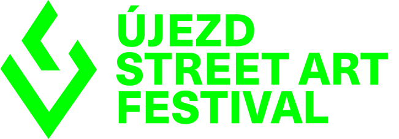

/ home / tickets
program and events
Pondělí / Monday 7. 9.
12:30—16:30
Filmová projekce / film projection
Street Art Film
kavárna Mlýnice
14:30—16:30
Veletrh umění / art fair
Sovovy mlýny
denně / daily od 18:00
Urban Legends
divadlo Na prádle
úterý / tuesday 8. 9.
12:30—16:30
artová rozcvička pro všechny / art warm–up for everyone
hellichova 22
18:00—20:30
vernisáž výstavy „Street Art in Action“ / grand opening of exhibition
"Street Art in action"
Divadlo Na Prádle
Vstup zdarma / Free entry
středa / wednesday 9. 9.
9:30—13:30
konference na téma art brut / art brut conference
kavárna Mlýnce
14:30—16:30
projekce filmu „eternity“ / screening of "eternity"
letní kino 22
čtvrtek / thursday 10. 9.
10:00—16:00
otevřený workshop psaní a tvorby písma / open workshop for writing and typography
hellichova 22
12:00
autorské čtení „Mladí literáti“ / author's reading "mladí literáti"
dobrá trafika
pátek / friday 11. 9.
10:00—20:30
workshop pod širým nebem / open air workshop
kampa open air
denně / daily 18:30—22:30
letní kino / summer theater
letní kino 22
sobota / saturday 12. 9.
10:30—14:00
komentovaná prohlídka po zášitou náměstka primmátora města Prahy / tour guided by deputy mayor of city prague
lennonova zeď
denně / daily od 10:00
open art studio / open art studio
sovovy mlýny
Vstup zdarma / Free entry
